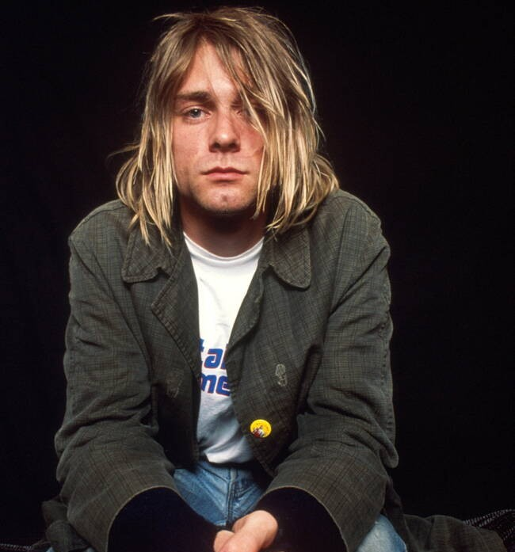
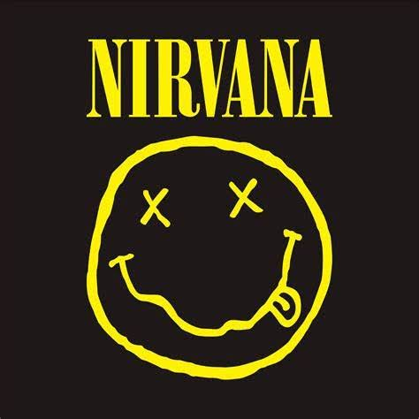
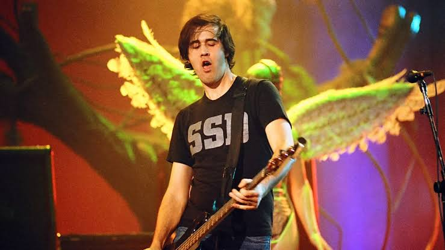
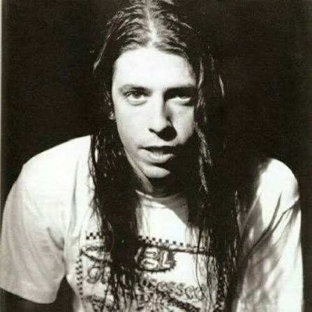
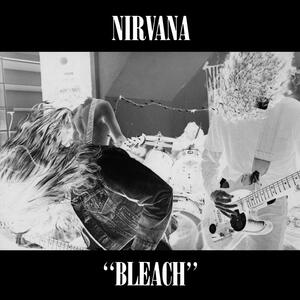
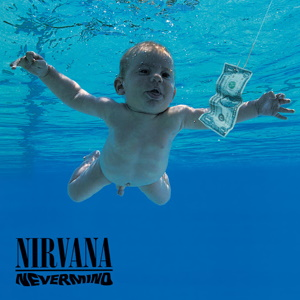
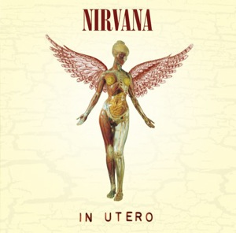

Kurt Cobain
Vocalista y guitarrista.

Una mirada a la historia, música y legado de la banda.
Nirvana fue una icónica banda de rock estadounidense formada en Aberdeen, Washington, en 1987. Fundada por el vocalista y guitarrista Kurt Cobain y el bajista Krist Novoselic, la agrupación se convirtió en el estandarte principal del movimiento grunge y en la voz musical de la llamada Generación X. Tras experimentar con varios bateristas en sus inicios, la alineación definitiva se consolidó en 1990 con la llegada de Dave Grohl. El sello distintivo de Nirvana consistía en cambios extremos de volumen y tempo. Solían contrastar versos calmados y melódicos con coros estallando en rabia y distorsión de guitarras. Las letras de Cobain cargaban con altas dosis de apatía, alienación, sarcasmo y frustración social. La banda llegó a su fin abruptamente en abril de 1994 tras el trágico suicidio de Kurt Cobain a los 27 años en Seattle. Posteriormente se lanzó el aclamado álbum en vivo MTV Unplugged in New York (1994). Tras la disolución, el baterista Dave Grohl pasó a fundar la exitosa banda de rock Foo Fighters, mientras que Novoselic se enfocó en el activismo político. Nirvana fue inducida al Salón de la Fama del Rock and Roll en 2014, reafirmando su lugar como una de las agrupaciones más influyentes en la historia de la música moderna.

Vocalista y guitarrista.

Bajista de Nirvana.

Baterista de Nirvana.

1989

1991

1993
Esta página web fue creada con fines educativos y académicos.
Nirvana y sus elementos relacionados pertenecen a sus respectivos propietarios. Este proyecto no tiene fines comerciales.